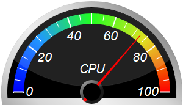
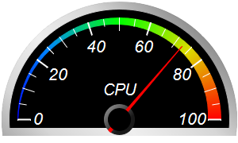
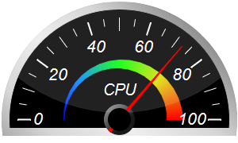
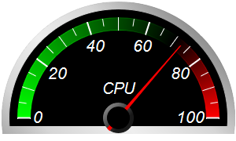
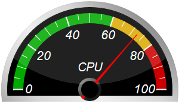
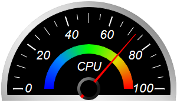

This example demonstrates semicircle meters with black background, silver border and glare effect.
The silver border effect is achieved by using
AngularMeter.relativeLinearGradient to create a gradient consisting of varying levels of grey.
Glare effect is added to some of the meters using
AngularMeter.addGlare. Glare effect works best in a dark background.
The following is the command line version of the code in "cppdemo/blacksemicirclemeter". The MFC version of the code is in "mfcdemo/mfcdemo". The Qt Widgets version of the code is in "qtdemo/qtdemo". The QML/Qt Quick version of the code is in "qmldemo/qmldemo".
#include "chartdir.h"
void createChart(int chartIndex, const char *filename)
{
// The value to display on the meter
double value = 72.55;
// Create an AngularMeter object of size 300 x 180 pixels with transparent background
AngularMeter* m = new AngularMeter(300, 180, Chart::Transparent);
// Set the default text and line colors to white (0xffffff)
m->setColor(Chart::TextColor, 0xffffff);
m->setColor(Chart::LineColor, 0xffffff);
// Center at (150, 150), scale radius = 128 pixels, scale angle -90 to +90 degrees
m->setMeter(150, 150, 128, -90, 90);
// Gradient color for the border to make it silver-like
double ringGradient[] = {1, 0x909090, 0.5, 0xd6d6d6, 0, 0xeeeeee, -0.5, 0xd6d6d6, -1, 0x909090};
const int ringGradient_size = (int)(sizeof(ringGradient)/sizeof(*ringGradient));
// Add a black (0x000000) scale background of 148 pixels radius with a 10 pixel thick silver
// border
m->addScaleBackground(148, 0, 10, m->relativeLinearGradient(DoubleArray(ringGradient,
ringGradient_size), 45, 148));
// Meter scale is 0 - 100, with major tick every 20 units, minor tick every 10 units, and micro
// tick every 5 units
m->setScale(0, 100, 20, 10, 5);
// Set the scale label style to 15pt Arial Italic. Set the major/minor/micro tick lengths to
// 16/16/10 pixels pointing inwards, and their widths to 2/1/1 pixels.
m->setLabelStyle("Arial Italic", 16);
m->setTickLength(-16, -16, -10);
m->setLineWidth(0, 2, 1, 1);
// Demostrate different types of color scales and putting them at different positions
double smoothColorScale[] = {0, 0x0000ff, 25, 0x0088ff, 50, 0x00ff00, 75, 0xdddd00, 100,
0xff0000};
const int smoothColorScale_size = (int)(sizeof(smoothColorScale)/sizeof(*smoothColorScale));
double stepColorScale[] = {0, 0x00aa00, 60, 0xddaa00, 80, 0xcc0000, 100};
const int stepColorScale_size = (int)(sizeof(stepColorScale)/sizeof(*stepColorScale));
double highLowColorScale[] = {0, 0x00ff00, 70, Chart::Transparent, 100, 0xff0000};
const int highLowColorScale_size = (int)(sizeof(highLowColorScale)/sizeof(*highLowColorScale));
if (chartIndex == 0) {
// Add the smooth color scale at the default position
m->addColorScale(DoubleArray(smoothColorScale, smoothColorScale_size));
} else if (chartIndex == 1) {
// Add the smooth color scale starting at radius 128 with zero width and ending at radius
// 128 with 16 pixels inner width
m->addColorScale(DoubleArray(smoothColorScale, smoothColorScale_size), 128, 0, 128, -16);
} else if (chartIndex == 2) {
// Add the smooth color scale starting at radius 70 with zero width and ending at radius 60
// with 20 pixels outer width
m->addColorScale(DoubleArray(smoothColorScale, smoothColorScale_size), 70, 0, 60, 20);
} else if (chartIndex == 3) {
// Add the high/low color scale at the default position
m->addColorScale(DoubleArray(highLowColorScale, highLowColorScale_size));
} else if (chartIndex == 4) {
// Add the step color scale at the default position
m->addColorScale(DoubleArray(stepColorScale, stepColorScale_size));
} else {
// Add the smooth color scale at radius 60 with 15 pixels outer width
m->addColorScale(DoubleArray(smoothColorScale, smoothColorScale_size), 60, 15);
}
// Add a text label centered at (150, 125) with 15pt Arial Italic font
m->addText(150, 125, "CPU", "Arial Italic", 15, Chart::TextColor, Chart::BottomCenter);
// Add a red (0xff0000) pointer at the specified value
m->addPointer2(value, 0xff0000);
// Add glare up to radius 138 (= region inside border)
if (chartIndex % 2 == 0) {
m->addGlare(138);
}
// Output the chart
m->makeChart(filename);
//free up resources
delete m;
}
int main(int argc, char *argv[])
{
createChart(0, "blacksemicirclemeter0.png");
createChart(1, "blacksemicirclemeter1.png");
createChart(2, "blacksemicirclemeter2.png");
createChart(3, "blacksemicirclemeter3.png");
createChart(4, "blacksemicirclemeter4.png");
createChart(5, "blacksemicirclemeter5.png");
return 0;
}
© 2023 Advanced Software Engineering Limited. All rights reserved.